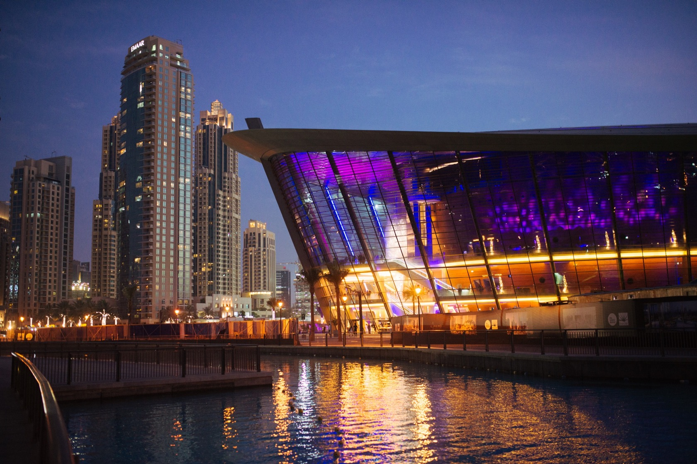
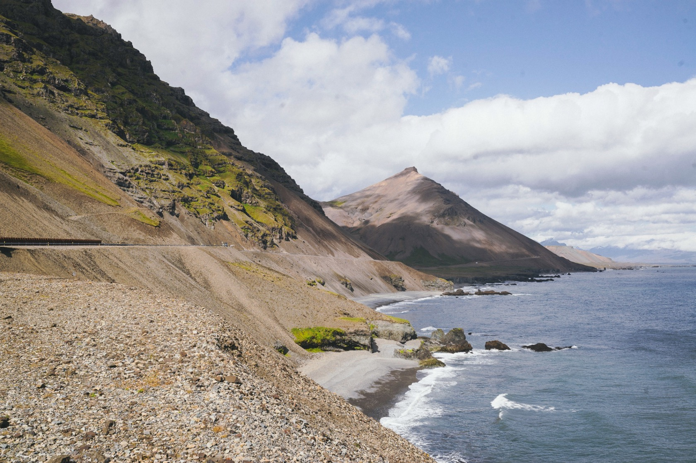
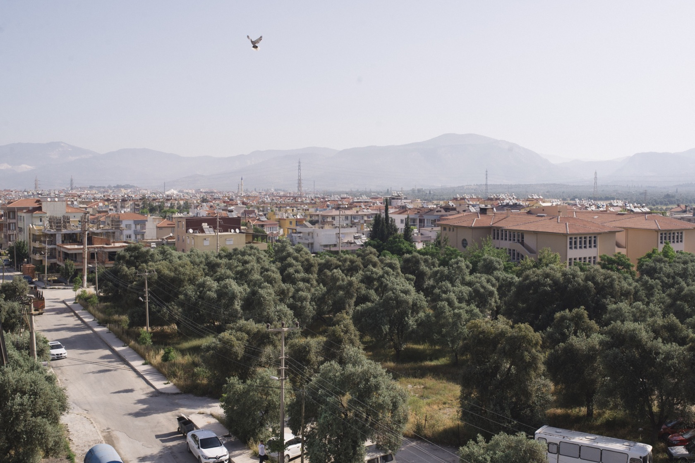
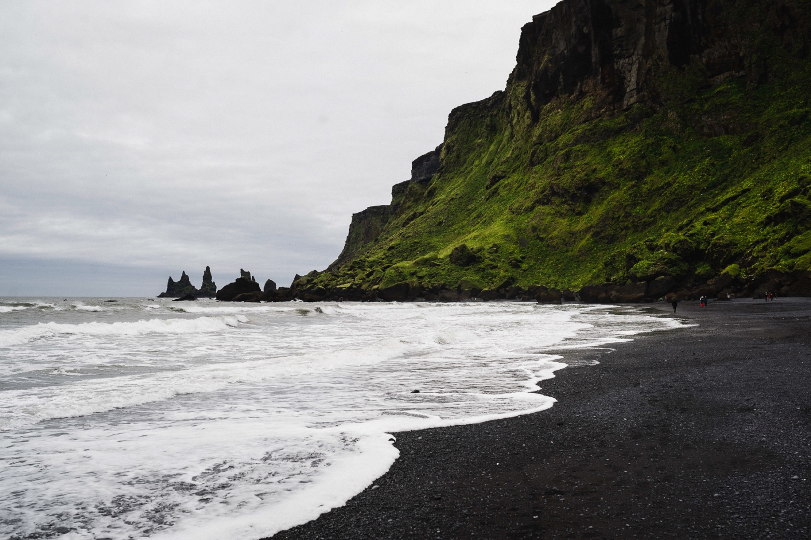
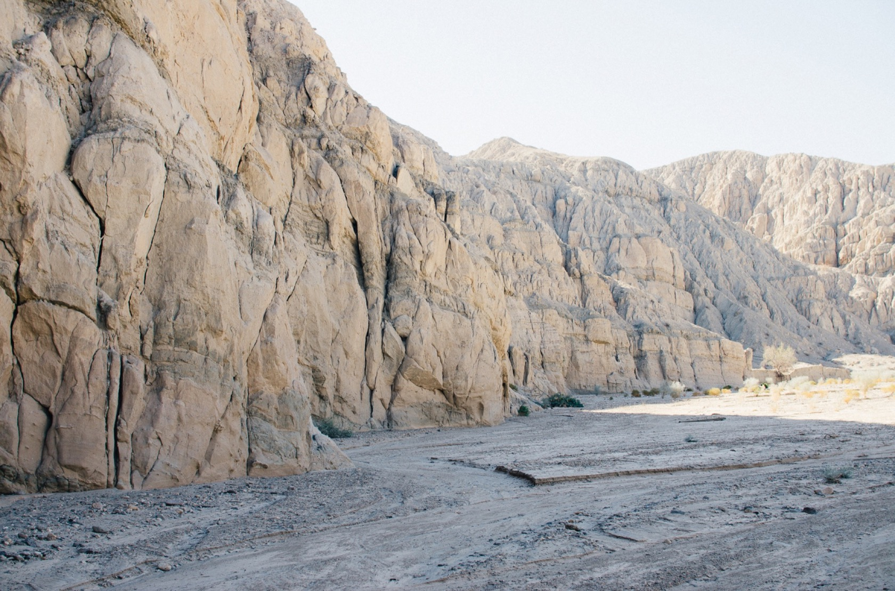
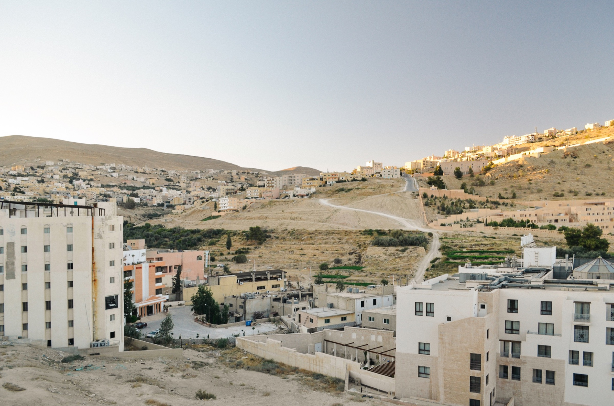

Sardis, Southwestern Turkey
Dubai, UAE
Arches National Park, Utah

Islands of Vestmannaeyjar, Iceland
Jökulsárlón, Iceland
Eastfjords, Iceland
Milas, Turkey

Wadi Mujib, Southern Jordan

Aya Sofya, Istanbul

Punch Bowl Falls, Oregon

Columbia River, Western Oregon
Vik, Iceland

Arches National Park
Southern California
Southern California

Canon Beach, Oregon

Wadi Rum, Southern Jordan

Houston, Texas

Coso Volcanic Field, California
Portland, Oregon

Lava Tube, Southern California
Petra, Jordan

Las Cruces, New Mexico

Mount St Helens, Washington
Amman, Jordan